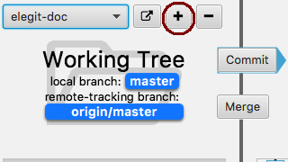
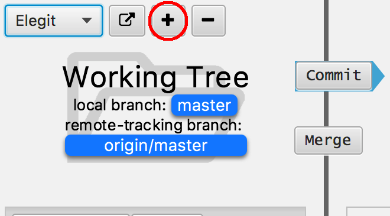

Help Add Documentation¶
Elegit is an educational tool. If there is something unclear that you would like to explain better, create documentation for it!
The documentation for Elegit is written in reStructuredText and generated using Sphinx. You can add documentation files to our documentation repository. See below for more details on writing docs.
Installing Sphinx¶
To parse the files written in reStructuredText into the actual HTML docs, we use a tool called Sphinx. To view your new pages or changes, you will first need to install Sphinx on your machine. The easiest way to install it is with pip install sphinx.
Adding Files¶
Existing and new pages should all be in the docs/ directory. Before creating a new file, check to see if there is a relevant page that it would make more sense to add to. If you do create a new file, make sure you add it to the table of contents in index.rst or Sphinx will give you the warning:
$ WARNING: document isn't included in any toctree
Simply open or create the .rst file you wish to edit and write away!
Creating HTML¶
Generating documentation from the .rst files is very easy. Simply run make html from the docs/ directory and Sphinx will create the corresponding HTML. The results can be found in _build/html. If something seems off or you don’t see a change that you just made, running make clean before you build can sometimes help.
Inserting Images¶
Images are essential to any good tutorial. To insert an image, use the image directive. Details can be found by looking at the documentation or by looking at the source of First Elegit Project or this page. If possible, take large screenshots by using a display with a high resolution and scale to 50%. This makes it look much better:
Screenshot from regular display:
Screenshot from retina display:
Next Steps¶
Now let’s get started! First look at the documentation that currently exists and read Notes About Documentation. Here are some tasks to get started on (and feel free to add more):
- Complete First Elegit Project tutorial
- Create page on distinctions between Working Tree, Local Repository, and Remote Repository
- Change the Adding Files page to be more general and talk about staging
- Write Commiting Changes page and describe commit window options
- Write tutorial on branching (something like this or this tutorial but in Elegit)
- Page on merge window and its options
- Write detailed tutorial(s) on merging
- Even more on merging?
- Page on what the The Tree View represents
- Page on what the files view represents
- Page on the commit info window (that pops up when you click on a commit)
- Create pages for other missing basics

{kind=link}